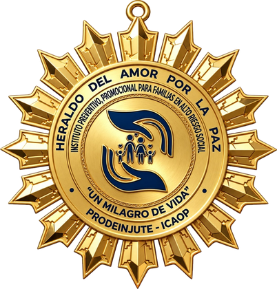

Casa de Paz Perú
Centro comunitario para el desarrollo integral de las familias en alto riesgo social, en San Antonio – Jicamarca (Huarochirí).
Trabajamos por las familias en alto riesgo social y promovemos los valores éticos, la cultura de paz y el diálogo interreligioso.

Somos la obra social de la Iglesia Católica Apostólica Ortodoxa del Perú. Acompañamos a familias, niños y adultos mayores en situación de vulnerabilidad, con espacios de encuentro, formación y ayuda concreta.
Centro comunitario para el desarrollo integral de las familias en alto riesgo social, en San Antonio – Jicamarca (Huarochirí).
Instituto preventivo y promocional para familias en alto riesgo social, junto con PRODEINJUTE.
Reconocemos a ciudadanas y ciudadanos que, con su trayectoria y sus valores, trabajan por la paz, la reconciliación y el desarrollo social del Perú.
Ayúdanos a abrir la vía de acceso a Casa de Paz Perú: cada galón de petróleo que donas abre un metro de camino.
Pronto compartiremos aquí fotos de nuestra labor social.
Selecciona una campaña para ver el detalle.
¡Te invitamos a participar desde todo el Perú!
Desde el norte hasta el sur, costa, sierra y selva: tú también puedes ser parte. Nuestras manos y nuestro corazón llegan a muchos rincones del Perú, pero necesitamos de tu generosidad para llegar aún más lejos.
«Que cada uno use los dones que recibió para servir a los demás.» — 1 Pedro 4,10
Cada niño y niña del Perú merece brillar de alegría esta Navidad. Con un simple gesto, puedes iluminar su vida, esté donde esté.
Ellos nos enseñaron con su vida. Ahora nos toca acompañarlos, hacerles sentir que no están solos, que todos somos sus nietos.
También somos puente de ayuda para los ancianos del Asilo de Ancianos Los Olivos y de la Residencia Splendor. Tu donación llega también a ellos, y a muchos más adultos mayores en distintas regiones del país.
Sede Central — Parroquia San Bartolomé Apóstol
AA.HH. Almirante Grau, Mz. B, Lote 26 A — San Juan de Lurigancho, Lima
Calle Los Topacios N° 390
Cerros de Camacho — San Juan de Lurigancho, Lima
¿Estás en otra provincia o departamento? Contáctanos y te diremos cómo hacer llegar tu aporte. ¿No puedes trasladarte? Nosotros coordinamos la recolección.
Yape
BCP — Cuenta en soles
Certificado de donación: entregamos un certificado de donación oficial, deducible de impuestos. Solo indícanos tus datos al momento de tu aporte y lo preparamos para ti.
Sede central: Parroquia San Bartolomé Apóstol, San Juan de Lurigancho — Lima. ¡Presentes también en distintos distritos, provincias y departamentos de todo el Perú!
Campaña de Regreso a Clases — Casa de Paz Perú
Cada año, muchos niños y niñas inician sus clases sin lo básico: cuadernos, lápices, mochila… Tú puedes cambiar eso.
«La educación es el arma más poderosa para cambiar el mundo.» — Nelson Mandela
Juntemos útiles escolares para que ningún niño ni niña empiece el año con las manos vacías. Que lleguen al aula con dignidad, con esperanza y con las herramientas que necesitan para construir su futuro.
«No hay mayor regalo que ayudar a alguien a aprender. Con una mochila llena de útiles, tú estás llenando el futuro de un niño o una niña de esperanza.»
Parroquia San Bartolomé Apóstol
AA.HH. Almirante Grau, Mz. B, Lote 26 A — San Juan de Lurigancho, Lima
Calle Los Topacios N° 390
Cerros de Camacho — San Juan de Lurigancho, Lima
¿No puedes trasladarte? ¡Nosotros vamos por tu donación! Contáctanos y coordinamos la recolección.
Yape
BCP — Cuenta en soles
Certificado de donación: entregamos un certificado de donación oficial, deducible de impuestos.
Abre camino a Casa de Paz Perú · San Antonio – Jicamarca
La Municipalidad de San Antonio nos presta sus máquinas para abrir la vía de acceso al Complejo Parroquial Casa de Paz Perú. Necesitamos 700 galones de petróleo para que puedan trabajar: cada galón que donas abre un metro de camino.
«Preparad camino al Señor» — Isaías 40,3
Selecciona un anuncio para ver el detalle.
Líderes del Desarrollo y Excelencia Humanitaria
Hay personas que, con su trayectoria, sus acciones y sus valores, contribuyen a construir una sociedad mejor. Hoy, sus méritos merecen ser reconocidos.
La Asociación Internacional Heraldos del Amor por la Paz invita a la ciudadanía de todo el Perú a participar en la Ceremonia de Nombramiento de Comisionados de Paz, una distinción para ciudadanas y ciudadanos de bien comprometidos con la promoción de la paz, los valores, el desarrollo social y el bienestar de la sociedad, en los ámbitos público y privado.
Ciudadanas y ciudadanos de bien de todo el territorio nacional: líderes sociales, profesionales, empresarios, docentes, estudiantes, dirigentes comunales, parroquiales y personas de reconocida trayectoria de servicio a la sociedad.
Envíanos tu Currículum Vitae (Hoja de Vida) y tu propuesta de trabajo por la paz y el desarrollo social a los números de contacto, para ser evaluado y recibir el nombramiento de Comisionado de Paz.
Reconocimiento: Comisionado de Paz, Líder del Desarrollo y Excelencia Humanitaria 2026. Un nombramiento para hombres y mujeres que, con fe, visión, liderazgo, perseverancia y compromiso, trabajan por la cultura de paz, la reconciliación, la solidaridad, el bienestar de las poblaciones vulnerables y el desarrollo integral de nuestro Perú.
Tu aporte llega directamente a la Asociación Internacional Heraldos del Amor por la Paz y sostiene Casa de Paz Perú y sus obras.
Después de donar, puedes enviarnos tu comprobante por WhatsApp al +51 994 738 400.